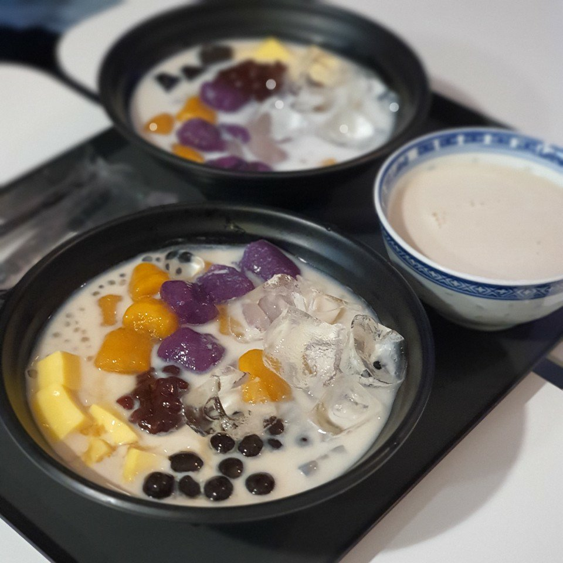

Best restaurant I recommend
수빈이가 추천해주는 최고의 맛집!!
Dessert Menu
가게 이름 : 경안당
주소지: 경기도 수원시 팔달구 화서문로31번길 8-15
메인메뉴 : 곶감감귤말이, 다과세트, 커피
후기 및 평가:한국의 고유한 분위기와 전통적인 느낌을 원한다면 방문해보세요!
달달한 곶감의 맛과 상큼한 감귤의 맛이 상당히 조화로운 디저트 메뉴는 꼭 먹어봐야할 필수메뉴인 '곶감감귤말이'이다. 케이크는 아무리 맛있어도 금방 물리는 편인데, 이건 계속 손이 간다는것을 알 수 있다. 한국의 전통적인 맛, 차의 향긋한 향이 몸을 안정시켜주는 정화의 기분을 느낄 수 있었다.
10점 만점에 10점
Best restaurant I recommend
수빈이가 추천해주는 최고의 맛집!!

Dessert Menu
가게 이름 : 해피니스 디저트,
주소지:서울특별시 광진구 아차산로 30길 31
메인메뉴 : 밀크티, 위위안
후기 및 평가: 대만식 디저트 가게!
현지식의 고증을 정말 잘 살린 디저트 가게! 한국인의 입맛에는 안맞을 수 있지만, 특이한 중국식 디저트를 체험해 보고 먹어볼 수 있다는 점을 높게 평가했다. 호불호가 많이 갈릴 수 는 있지만, 특별한 경험으로써, 한번쯤 가보는것도 나쁘지 않다고 생각한다.
10점 만점에 5점
Best restaurant I recommend
수빈이가 추천해주는 최고의 맛집!!

dessert Menu
가게 이름 : 아오이토리
주소지: 서울특별시 마포구 와우산로29길 8
메인메뉴 : 일본식 빵
후기 및 평가: 만화책에서만 보이던 일본식 빵들이 모여 있는곳!
야키소바 빵, 메론빵, 무화과 스콘등 각각의 개성과 맛이 넘쳐 흐르는 수제빵집이에요. 상상속의 맛이 현실로 이뤄지는 마법같은 빵가게를 한번 들려보세요!
10점 만점에 8점
종류별로 선택해보기